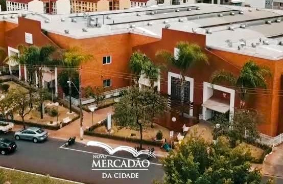

Theatro Pedro II
Um dos maiores teatros de ópera do Brasil, ícone da cultura de Ribeirão.
Bosque Municipal Fábio Barreto
Uma área verde com trilhas, zoológico e espaços de lazer para a família.

Novo Mercadão
Conhecido pelos produtos locais e a culinária típica de Ribeirão Preto.
Parque Municipal Dr. Luis Carlos Raya
Um espaço amplo para atividades físicas, piqueniques e eventos ao ar livre.
Novidade!
Confira a reabertura do Museu do Café, um marco histórico da cidade.
Turismo Ecológico
Explore as trilhas ecológicas do Jardim Botânico.